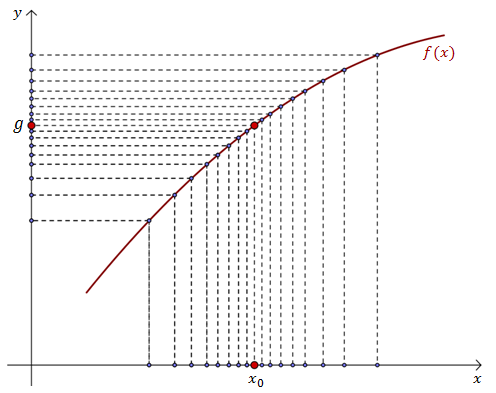
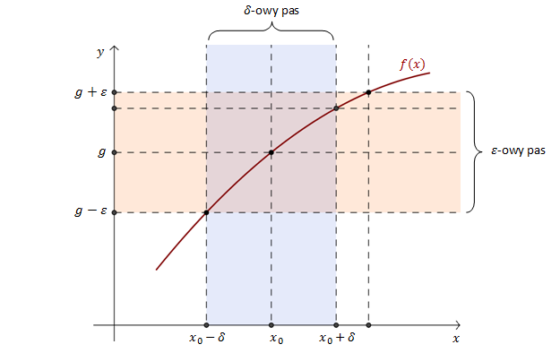

W szkole średniej poznaliśmy definicję Heinego granicy funkcji w punkcie.
Przypomnijmy ją:
Definicji Heinego
Jeśli dla dowolnego ciągu \((x_n)\) zbieżnego do \(x_0\) (zarówno z lewej
jak i z prawej strony), wartości \((f(x_n))\) zbiegają do liczby \(g\), to \(g\) jest granicą
funkcji \(f(x)\) w punkcie \(x_0\).
Zapis matematyczny: \[\lim_{x \to
x_0}f(x)=g\Leftrightarrow \underset{x_n\rightarrow x_0}{\forall }\lim_{x_n \to x_0}f(x_n)=g \] 
Na studiach możemy spotkać się z definicją Cauchy'ego:
Definicja Cauchy'ego
Funkcja \(f(x)\) ma w punkcie \(x_0\) granicę \(g\), jeśli dla każdej
liczby \(\epsilon \gt 0\) istnieje taka liczba \(\delta \gt 0\), że dla każdego \(x\) spełniającego:
\(|x - x_0| \lt \delta\) zachodzi \(|f(x) - g| \lt \epsilon\). 
Ilustracja graficzna definicji Cauchy'ego granicy funkcji w punkcie.
Inne sformułowanie definicji Cauchy'ego:
Funkcja \(f(x)\) ma w punkcie \(x_0\) granicę \(g\),
jeśli dla dowolnie małego pasa \(\epsilon\)-owego można znaleźć taki pas \(\delta\)-owy, że każdy
punkt wykresu funkcji \(f(x)\) z pasa \(\delta\)-owego leży w pasie \(\epsilon\)-owym.
Zbadaj czy istnieje granica funkcji \(f(x)=e^{-\frac{1}{x}}\) w punkcie \(x_0=0\).
Granica nie istnieje - funkcja jest nieciągła.
Zbadaj czy istnieje granica funkcji \(f(x)=\frac{|x-1|}{x-1}-x\) w punkcie
\(x_0=1\).
Granica nie istnieje - funkcja jest nieciągła.
Oblicz granice jednostronne funkcji \(f(x)=\frac{x}{x-2}\) w punkcie nienależącym
do dziedziny.
\(\lim_{x \to 0^{-}}f(x)=-\infty \) i \(\lim_{x \to
0^{+}}f(x)=+\infty\)